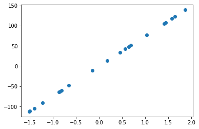

Regression Linear
Regression Linear#
from sklearn.datasets import make_regression
from matplotlib import pyplot
X_test, y_test = make_regression(n_samples=20, n_features=1, noise=0.2)
pyplot.scatter(X_test,y_test)
pyplot.show()

X
NameErrorTraceback (most recent call last)
<ipython-input-2-b5fec669aca1> in <module>
----> 1 X
NameError: name 'X' is not defined
from sklearn.datasets import make_regression
from matplotlib import pyplot as plt
X_test, y_test = make_regression(n_samples=150, n_features=1, noise=2)
plt.scatter(x=X_test,y=y_test)
plt.xlabel("X_test")
plt.ylabel("y_test")
plt.show()
import numpy as np
from sklearn.linear_model import LinearRegression
from sklearn.datasets import make_regression
from matplotlib import pyplot as plt
X_test, y_test = make_regression(n_samples=20, n_features=1, noise=2)
plt.scatter(x=X_test,y=y_test)
plt.xlabel("X_test")
plt.ylabel("y_test")
plt.show()
reg = LinearRegression().fit(X_test, y_test)
X=X_test.tolist()
y=y_test.tolist()
df3 = pd.DataFrame(X,y)
df3
| 0 | |
|---|---|
| 8.376501 | 0.836205 |
| 1.094694 | 0.068106 |
| -3.668324 | -0.327998 |
| 7.429130 | 0.551081 |
| -6.908060 | -0.997736 |
| 2.363813 | 0.690714 |
| -0.099375 | -0.073185 |
| 10.262792 | 1.207737 |
| 5.010962 | 0.704429 |
| -1.363562 | 0.217604 |
| -1.322650 | 0.251295 |
| -1.849823 | 0.178039 |
| 7.761109 | 0.664705 |
| 0.427802 | 0.089633 |
| -3.205454 | -0.468499 |
| 1.502025 | 0.230299 |
| -7.070961 | -0.557696 |
| 9.326999 | 1.286976 |
| -5.096926 | -0.891073 |
| 4.605427 | 0.501240 |
reg.score(X_test, y_test)
0.6069356807565205
reg.coef_
array([26.28841926])
reg.intercept_
0.24035468705217222
reg.predict(np.array([[3]]))
array([79.10561248])
import pandas as pd
df = pd.DataFrame(X_test,y_test)
df
| 0 | |
|---|---|
| 45.262941 | 1.702263 |
| 21.534066 | -0.197080 |
| -44.745343 | -1.441655 |
| 19.807339 | 0.697179 |
| -18.678015 | -0.603076 |
| ... | ... |
| -2.996766 | 0.751105 |
| -7.917000 | -0.234434 |
| -23.294534 | -0.142580 |
| -10.041645 | 0.462405 |
| -16.760429 | -0.517642 |
150 rows × 1 columns
print(df.corr())
0
0 1.0
y_pred = reg.predict(X_test)
y_pred
array([ 44.99015435, -4.94055945, -37.6584655 , 18.56808599,
-15.61355471, -22.04399696, 0.28626446, -5.09196703,
-18.10917834, -27.02266838, 70.41962937, 17.62767826,
20.04036265, -11.94606911, -19.23099609, -2.5955411 ,
3.94676691, -30.77111026, -7.00527982, 32.03448892,
-13.83494573, 27.38769326, 12.54506553, 38.21952728,
20.31783057, -11.20472155, -37.83436256, 23.64225406,
-18.97332854, -26.4067229 , -30.94854256, 9.36725511,
9.7751029 , -30.90197556, 16.15696783, -9.93133823,
6.49815439, 15.54429584, 36.33740245, -23.14617959,
-2.24996411, -20.49520469, 52.28376652, -32.72778553,
-17.26707003, -9.48918061, 29.72448149, -29.36304088,
38.20770606, -42.19153271, 3.70679076, 16.03791672,
-45.62691369, 58.39089997, 30.8913872 , -6.67328151,
6.29892247, -10.93741493, 6.26468106, 29.17992451,
-25.7022148 , -14.36442778, 25.87165957, -10.8425926 ,
37.54337487, 4.81695735, 33.53560637, 33.10511731,
-17.67885077, -19.9401749 , 3.75224453, 35.83505922,
14.96862268, 44.79687281, -7.6760856 , -35.6804629 ,
11.65997342, 49.40291133, 43.36687182, 1.05572077,
-5.02079709, 3.3407406 , -33.96736538, 17.02311249,
2.19087905, -48.13414765, -36.12581786, 23.873108 ,
-1.83186665, 14.98542249, 38.16245709, 29.23046196,
-33.17310015, -13.32777537, 85.74369248, -32.72230595,
27.82661244, -10.43218901, 0.91161122, 42.29838884,
-11.67027484, 47.08254401, 35.00140944, -6.85607726,
23.61029038, -3.61114427, 44.78785558, -36.51919608,
-10.22045919, 1.49292436, -16.36000968, 24.44838025,
-23.76649007, 7.14695052, -6.08477892, -12.2916605 ,
27.66278546, -39.2304816 , 14.19422475, -36.88896328,
-29.86106936, -4.63318351, 11.50832934, -37.92138307,
8.83554944, -0.82702775, 6.06174138, -6.55565572,
4.45371534, 37.86315214, -8.45926559, 12.46918463,
-39.34021248, 29.91846963, 12.44884129, -21.78004963,
21.41324117, 4.53271488, 11.29532774, 12.21444267,
2.017422 , 12.26494407, -43.92814806, -2.30340166,
-38.69034702, 19.98571987, -5.92254194, -3.50783603,
12.39624307, -13.3676298 ])
df_preds = pd.DataFrame({'Data asli': y_test.squeeze(), 'Data prediksi': y_pred.squeeze()})
df_preds
| Data asli | Data prediksi | |
|---|---|---|
| 0 | 45.262941 | 44.990154 |
| 1 | 21.534066 | -4.940559 |
| 2 | -44.745343 | -37.658465 |
| 3 | 19.807339 | 18.568086 |
| 4 | -18.678015 | -15.613555 |
| ... | ... | ... |
| 145 | -2.996766 | 19.985720 |
| 146 | -7.917000 | -5.922542 |
| 147 | -23.294534 | -3.507836 |
| 148 | -10.041645 | 12.396243 |
| 149 | -16.760429 | -13.367630 |
150 rows × 2 columns
##Evaluasi model